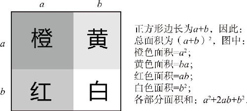
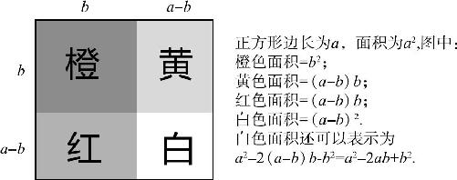

接下来，我们要继续讨论多项式乘法的一种特殊形式，（a ＋b ）·（a ＋b ），也就是a ＋b 的平方会有什么样的结果呢？
（a ＋b ）2
＝（a ＋b ）（a ＋b ）
＝（a ＋b ）a ＋（a ＋b ）b
＝a 2 ＋b a ＋a b ＋b 2
＝a 2 ＋2a b ＋b 2
结果为什么会是这样呢？根据幂的乘方公式，我们知道积的幂等于幂的积，也就是（a b ）2 ＝a 2 b 2 ，两数相乘的平方等于两个数分别平方再相乘；但如果变成两数相加的平方，为什么（a ＋b ）2 就不等于a 2 ＋b 2 呢？为什么一定要多出个2a b 呢？带着这个问题，我们继续往下看．
如果是（a －b ）2 又应该等于什么呢？是等于a 2 －b 2 ＋2a b 呢，还是等于a 2 －b 2 －2a b 呢？不要着急，还是按照多项式展开的规则，逐步处理：
（a －b ）2
＝（a －b ）（a －b ）
＝（a －b ）a －（a －b ）b
＝a 2 －b a －a b ＋（－b ）2
＝a 2 －2a b ＋b 2
结果出来了，b 2 一项居然是正的，负号都跑2a b 那儿去了．为什么会这样？我们可以参考第一个公式：（a ＋b ）2 ＝a 2 ＋2a b ＋b 2 ，如果把其中的b 换成了－b ，那么这里面b 的平方，也就变成了－b 的平方，而－b 的平方肯定还是等于b 的平方，但是2a b 就不行了，把b 换成－b 以后，2a b 当然就只能变成－2a b 了．这就是今天我们要学的两个公式，它们被称作完全平方公式：
（a ±b ）2 ＝a 2 ±2a b ＋b 2
在学习之前，我们是不是感觉对那个（a ＋b ）（c ＋d ）很熟了，可是这两个新公式一推导出来，还是感觉有点诧异，为什么会凭空冒出来个2a b 呢？跟（a b ）2 ＝a 2 b 2 这个公式一比，完全平方公式简直是丑爆了．这样的结果完全不符合我们的直觉，因此才会有人在面对这些公式的时候头疼不已．但是我们必须要清楚，学习的目的本来就是对抗自己的直觉，提升自己的理性．因此还得想办法把它记住．接下来，我们还是通过图形和类比的方法加深一下自己的印象：
如图12－3，我们先在纸上画出一个正方形，假设它的边长是a ＋b ，然后拿个边长是a 的刷子，靠左边从上到下刷上红色，那么这个正方形就变成两部分了，左边是宽度为a 的红色长方形，右边是宽度为b 的长方形；然后，我们再用一把边长是a 的黄色刷子，靠在上面从左到右地刷一遍黄色，这样一来，水平方向也分成了两部分，结果这个正方形就被分成了四个部分．然后这个大正方形的面积就有两种表达方法了：第一种方法是把它看作是总体的，它的边长是a ＋b ，面积就是（a ＋b ）的平方；第二种方法是把四部分的面积加起来，橙色的正方形面积是a 的平方，白色的是b 的平方，还有两个长方形的面积是2a b ．最后我们就得到了这样一个结果：（a ＋b ）2 ＝a 2 ＋2a b ＋b 2 ．

图12－3
差的平方公式呢？只要我们改改字母就行了，得重新定义一下这个正方形的长度，把整体的大正方形边长看成a ，把左上角那个橙色的正方形边长看成b ，那么右下角的那个正方形的边长就是a －b 了．（如图12－4）这个小正方形的面积也有两种表达方式：第一种就是（a －b ）的平方；第二种就是大正方形，减去剩下的三个部分．那你说这不是等于a 2 减去b 2 ，再减去2a b 吗？它怎么是加b 2 呢？你忘了，那黄色和红色的长方形的长、宽，它不再是a 、b 了，它的长还是b ，但宽度变成了a －b ，这两个长方形的面积和，是2（a －b ）b ，当a 2 减去它的时候，那－2b 2 变成正的了，跟外头的一个－b 2 相互抵消，就剩下了一个正的b 2 了．

图12－4
上述证明过程显然不如平方和公式容易理解，接下来我们再做一个类比．我们把这个平方的操作比作干活，把这个加法操作看成两个人的合作．无论是在工厂里干活还是在野外打猎，两个人一起干活的力量，会远远大于两个人分别干活的和．因为在分工协作之中，a 、b 两个人就能相互帮助，他帮助你，你帮助他，所以就会多产生出2a b 的工作量来．那么这负的2a b 又应该如何理解呢？那就是说，如果你摊上一个成事不足败事有余的“猪队友”，结果就是，他把自己的活干好了，但是给你添的乱那是无穷无尽的，他踢你一脚，你打他一拳，可不就是－2a b 了吗？
以上，我们通过代数证明、图形证明、类比证明三种方式，完成了完全平方公式的证明．接下来，我们通过一个例题再来个特例证明：请问21×21等于多少呢？这不是个小学算术题吗，跟完全平方公式有什么关系呢？我们曾经说过一切都是算式，这21不也是由20＋1组成的吗？21×21，是不是20＋1的平方呢？按照公式等于第一个数的平方加上两个数的积的两倍，再加上最后一个数的平方，其实就是等于20的平方加上20×1的两倍，再加上1的平方，等于多少呢？441．那如果是19的平方又应该等于多少？等于10加9的平方吗？那多累，为什么不用20－1的平方计算呢？通过400－40＋1不难得出，结果等于361．